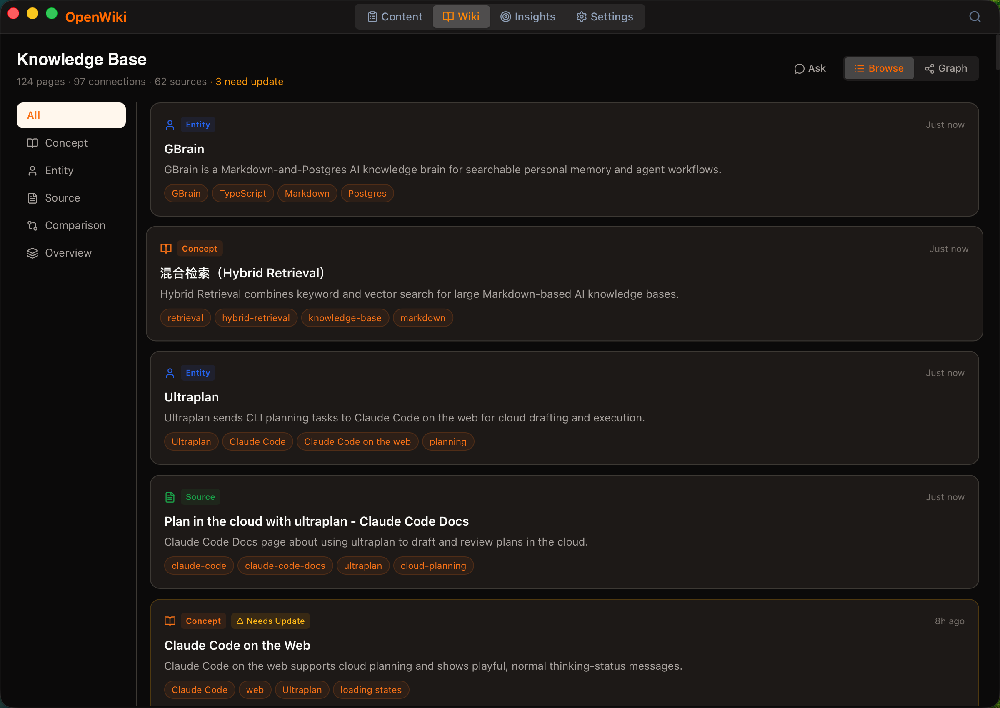
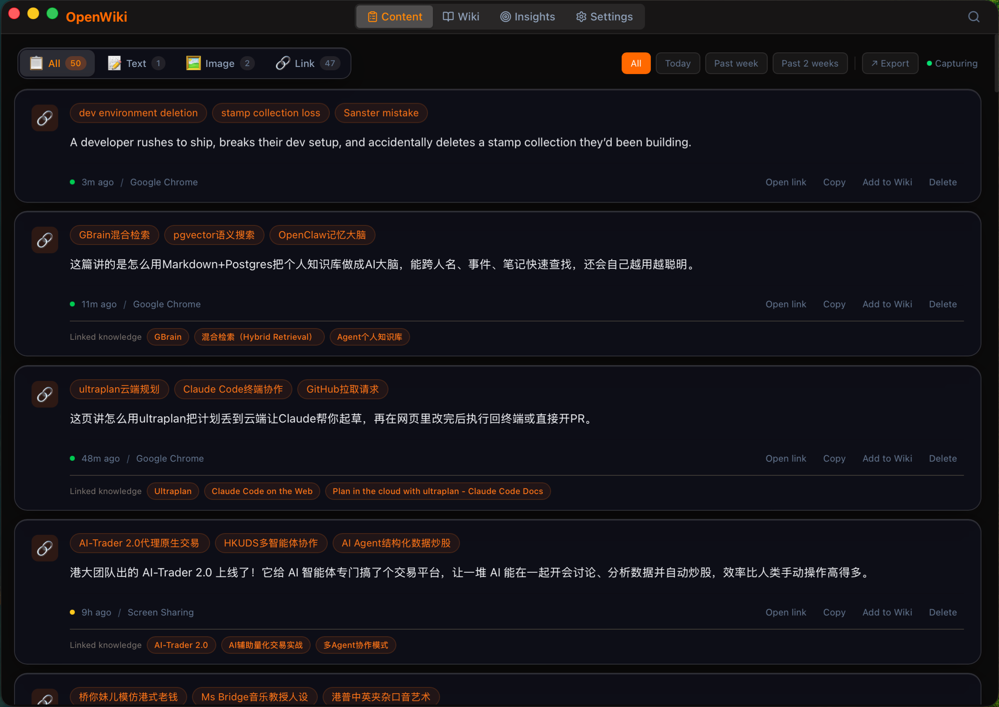
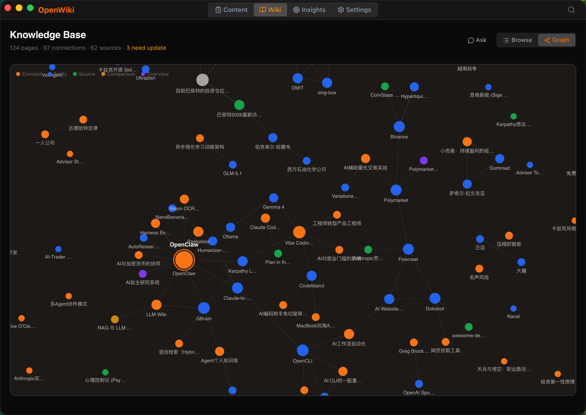
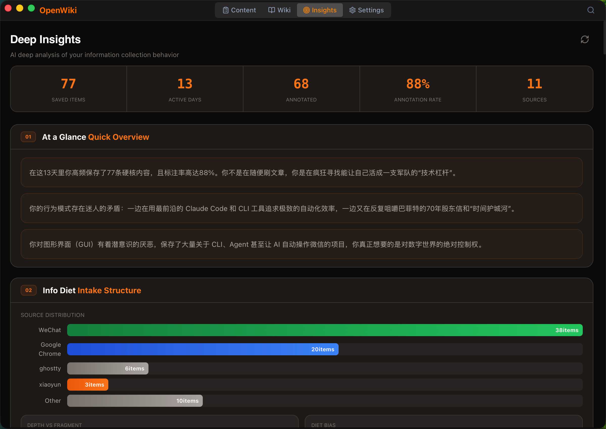

01
复制时顺手保存
复制后出现 10 秒倒计时浮窗，点一下保存即可。不需要的内容不用处理，它会自己消失。
复制文本、图片或链接后，桌面会出现一个 10 秒倒计时的小浮窗。想留下就点保存，不需要就继续做自己的事。
本地优先存储。支持 Claude、OpenAI、Gemini 等 AI 提供商。正在检测 GitHub 最新版本...

为什么需要它
复制过的句子、临时截的图、稍后再看的链接，最后经常消失在浏览器、聊天记录和剪贴板里。OpenWiki 做的是在你复制的那一刻轻轻接住它，再慢慢整理成能回看的结构。
复制后出现 10 秒倒计时浮窗，点一下保存即可。不需要的内容不用处理，它会自己消失。
AI 会把内容整理成概念、实体和主题页面，让散乱素材变成可继续生长的知识库。
知识图谱把页面之间的连接展示出来，适合复盘项目、研究主题和长期兴趣。
一键生成周报，看清自己这周关注了什么、忽略了什么，以及下一步可以做什么。
真实界面
OpenWiki 从捕获开始，最终落到可以浏览、提问、连接和回顾的个人资料库。
按类型和时间浏览保存过的文本、图片与链接。

用关系视图看清主题、页面和素材之间的连接。

从保存的内容里提炼每周重点、盲区和行动建议。

把信息碎片整理成可继续阅读、追问和维护的页面。
本地优先
OpenWiki 不是把所有东西悄悄吸走的工具。它让你决定保存哪些内容，并把数据放在本地 SQLite 数据库里。
下载桌面版，配置 AI 提供商后，就可以从下一次复制开始积累。